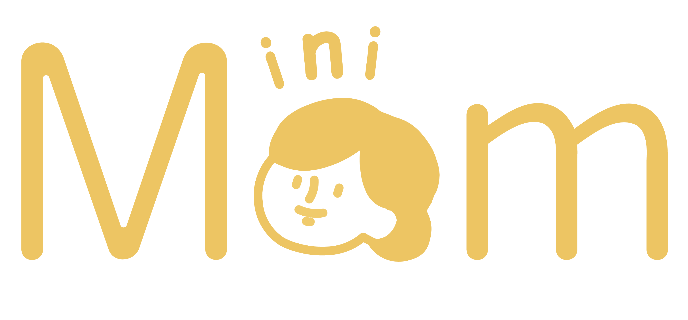

miniMom
2019.11

担当：デザイン
技術：Illustrator/Xd
OthloTechが開催したハッカソンで制作したIot家具miniMom(ミニマム)です。 片付けが苦手な人のための、片付けの習慣付け、かついらないものを捨てて収納場所を確保するためのプロダクト(Iot棚)です。
まず、棚に設置されたセンサーが、帰宅後すぐにアクセサリーなどの片付けができたかどうかを検知します。 （帰宅後３分以内に所定の位置に戻さないとセンサーから音が鳴る。） そして、センサーに連動したアプリが片付けできたかできてないかをカレンダーに表示します。 この機能は、帰宅してすぐに片付けをする習慣をつけるためのものです。
また、アプリによってしばらく使っていない（いらない）ものを可視化することで、ものを捨てるきっかけを作ることを目的としています。 (棚についているセンサーの位置で使っていないものを判別)
今回私はデザインのみを担当したのですが、アニメーションを利用したデザインがあったので、 コーダーに自分のイメージを伝えるためにもXdを使用してデザインしました。
このプロダクトは部屋をきれいに・物を少なくすること(ミニマリストになる)ことが目的だったので、 デザインもシンプルに、ミニマルなものになるように心がけました。 また、比較的若い人向けのプロダクトだったので文字も少なめ、小さめにしました。 清潔感を感じさせる青と、お母さんのような活発さを感じさせる黄色を使用しました。
miniMomという名前は、ミニマムという言葉と、「片付けなさい！」と怒ってくれるお母さんをかけたミニマムという名前になりました。